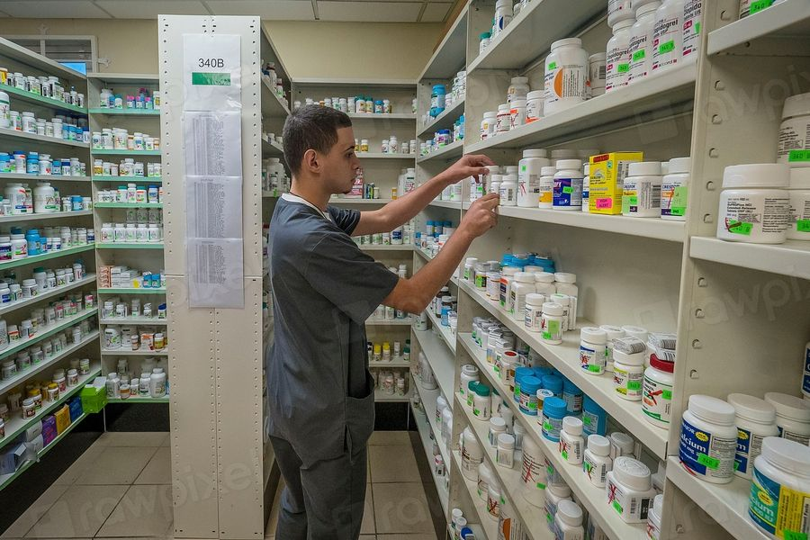
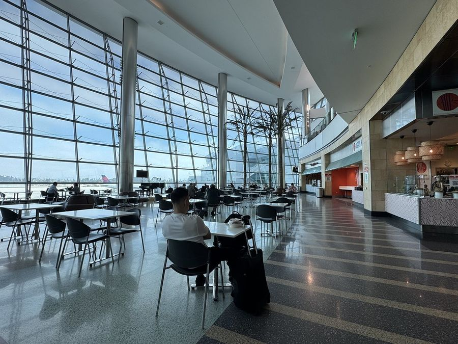

🇺🇸 アメリカ 4件
 デリーの夏の夜の耐え難い暑さThe Unbearable Heat of Delhi’s Summer Nightsインドの人口密集した首都の住民たちは、睡眠や健康に影響を及ぼす気温上昇に対処するため、冷蔵庫の電源を切ったり、一晩中ドアを開けたままにしたりしてみた
デリーの夏の夜の耐え難い暑さThe Unbearable Heat of Delhi’s Summer Nightsインドの人口密集した首都の住民たちは、睡眠や健康に影響を及ぼす気温上昇に対処するため、冷蔵庫の電源を切ったり、一晩中ドアを開けたままにしたりしてみた トランプが私の兄を失った！Trump Lost My Brother!二つの奇跡——兄の健康と、兄の幻滅。
トランプが私の兄を失った！Trump Lost My Brother!二つの奇跡——兄の健康と、兄の幻滅。 公衆衛生専門家、アイオワ州の弾薬爆発の余波について語るPublic health specialist discusses the aftermath of the munitions detonation in IowaNPRのA・マルティネスが、イリノイ大学アーバナ・シャンペーン校の公衆衛生専門家ウィル・サンダー氏に、アイオワ州の弾薬爆発の余波について話を聞く。
公衆衛生専門家、アイオワ州の弾薬爆発の余波について語るPublic health specialist discusses the aftermath of the munitions detonation in IowaNPRのA・マルティネスが、イリノイ大学アーバナ・シャンペーン校の公衆衛生専門家ウィル・サンダー氏に、アイオワ州の弾薬爆発の余波について話を聞く。 ニューウェーブの象徴デュラン・デュランのギタリスト、アンディ・テイラー氏が65歳で死去Andy Taylor, guitarist of new wave icons Duran Duran, dies at 65テイラー氏は2022年にステージ4の転移性前立腺がんとの闘いを公表した。同氏は1980年代のイングランドのバンド、デュラン・デュランのギタリストで、そのポップなヒット曲には…が含まれる
ニューウェーブの象徴デュラン・デュランのギタリスト、アンディ・テイラー氏が65歳で死去Andy Taylor, guitarist of new wave icons Duran Duran, dies at 65テイラー氏は2022年にステージ4の転移性前立腺がんとの闘いを公表した。同氏は1980年代のイングランドのバンド、デュラン・デュランのギタリストで、そのポップなヒット曲には…が含まれる🇬🇧 イギリス 10件
 イングランドの病院、インフルエンザ急増に備え 入院者数はコロナ禍前以来最多Hospitals in England brace for flu spike with admissions highest since pre-Covid冬の逼迫が強まるなか、NHSのトップは、病院の責任者は職員と面会者にマスク着用を求めることを検討すべきだと述べる。病院は「恐ろしい急増」に備えている
イングランドの病院、インフルエンザ急増に備え 入院者数はコロナ禍前以来最多Hospitals in England brace for flu spike with admissions highest since pre-Covid冬の逼迫が強まるなか、NHSのトップは、病院の責任者は職員と面会者にマスク着用を求めることを検討すべきだと述べる。病院は「恐ろしい急増」に備えている 退任するスコットランドの首席医務官は実際に何か悪いことをしたのか？Did Scotland's departing chief medical officer actually do anything wrong?グレゴール・スミス卿は、NHSグランピアンでの不手際をめぐる論争の中、健康上の理由を挙げて辞任した。
退任するスコットランドの首席医務官は実際に何か悪いことをしたのか？Did Scotland's departing chief medical officer actually do anything wrong?グレゴール・スミス卿は、NHSグランピアンでの不手際をめぐる論争の中、健康上の理由を挙げて辞任した。 バーナム氏、英国の純移民は今や「十分に」管理されていると発言Burnham says UK net migration now under 'sufficient' controlこれは、年間の純移民数が7万7000人に減少したことを受けたものだ。新型コロナウイルスのパンデミックを除けば、今世紀で最も低い水準である。スコットランドの首席医務官グレゴール・スミス氏がメンタルヘルスを理由に辞任Scotland's chief medical officer Gregor Smith resigns on mental health groundsグレゴール・スミス卿は、自身の職務が求める「並外れた困難」に引き続き対応することはできないと述べた。
バーナム氏、英国の純移民は今や「十分に」管理されていると発言Burnham says UK net migration now under 'sufficient' controlこれは、年間の純移民数が7万7000人に減少したことを受けたものだ。新型コロナウイルスのパンデミックを除けば、今世紀で最も低い水準である。スコットランドの首席医務官グレゴール・スミス氏がメンタルヘルスを理由に辞任Scotland's chief medical officer Gregor Smith resigns on mental health groundsグレゴール・スミス卿は、自身の職務が求める「並外れた困難」に引き続き対応することはできないと述べた。 クリスマス・トラクター・ランに特別な意味をもたらす赤ちゃんThe baby who gives Christmas tractor run special meaningアーサーの命をかけた闘いが、主催者マーティン・ブランドレスにとってクリスマス・トラクター・ランに個人的な意味を与えている。
クリスマス・トラクター・ランに特別な意味をもたらす赤ちゃんThe baby who gives Christmas tractor run special meaningアーサーの命をかけた闘いが、主催者マーティン・ブランドレスにとってクリスマス・トラクター・ランに個人的な意味を与えている。 グレゴール・スミス首席医務官、メンタルヘルスを理由に辞任Chief medical officer Gregor Smith resigns on mental health grounds2020年12月から同職を務めてきた55歳の同氏は、NHSグランピアンにおける回避可能な死への対応における自身の役割について疑問視されてきた
グレゴール・スミス首席医務官、メンタルヘルスを理由に辞任Chief medical officer Gregor Smith resigns on mental health grounds2020年12月から同職を務めてきた55歳の同氏は、NHSグランピアンにおける回避可能な死への対応における自身の役割について疑問視されてきた ナイフの男、ハンティングドン襲撃の数日前に精神病の薬が効いていないと医師に告げていたKnifeman told doctor his psychosis drugs weren't working days before Huntingdon attackLNERの列車襲撃事件に関する彼の裁判が終わった今、アンソニー・ウィリアムズの長い犯罪歴について報じることができる。
ナイフの男、ハンティングドン襲撃の数日前に精神病の薬が効いていないと医師に告げていたKnifeman told doctor his psychosis drugs weren't working days before Huntingdon attackLNERの列車襲撃事件に関する彼の裁判が終わった今、アンソニー・ウィリアムズの長い犯罪歴について報じることができる。 妊娠中の米受刑者が診察後、刑務所の車で逃走Pregnant US inmate escapes in prison vehicle after medical appointmentレベッカ・テイラーは、複数の窃盗と侵入窃盗の罪でニューメキシコ州で収監されていたより安価なHIV予防注射がアフリカに届き、数百万人に希望をもたらすHope for millions as cheaper HIV prevention jab reaches Africa年2回の注射として投与されるレナカパビルは、HIV感染の予防にほぼ100％の効果がある。
妊娠中の米受刑者が診察後、刑務所の車で逃走Pregnant US inmate escapes in prison vehicle after medical appointmentレベッカ・テイラーは、複数の窃盗と侵入窃盗の罪でニューメキシコ州で収監されていたより安価なHIV予防注射がアフリカに届き、数百万人に希望をもたらすHope for millions as cheaper HIV prevention jab reaches Africa年2回の注射として投与されるレナカパビルは、HIV感染の予防にほぼ100％の効果がある。 NHSでADHDや自閉症の診断を受けるのはなぜこんなに難しいのか？Why is it so hard to get ADHD or autism diagnosis on the NHS?リン・バルメインさんは、ADHDの評価を待つことが経済的負担だけでなく、自身の精神的健康とウェルビーイングにも影響を及ぼしていると語る。
NHSでADHDや自閉症の診断を受けるのはなぜこんなに難しいのか？Why is it so hard to get ADHD or autism diagnosis on the NHS?リン・バルメインさんは、ADHDの評価を待つことが経済的負担だけでなく、自身の精神的健康とウェルビーイングにも影響を及ぼしていると語る。🇩🇪 ドイツ 1件
 イビサ島沖でディーゼルタンカーが沈没し、乗組員が死亡Crew member dies after diesel tanker sinks off Ibiza coast当局は乗組員17人を救助したが、スペインのイビサ島沖でディーゼルタンカーが沈没した後、そのうち1人が後に病院で死亡した。起こり得ることに対する緊急対応計画
イビサ島沖でディーゼルタンカーが沈没し、乗組員が死亡Crew member dies after diesel tanker sinks off Ibiza coast当局は乗組員17人を救助したが、スペインのイビサ島沖でディーゼルタンカーが沈没した後、そのうち1人が後に病院で死亡した。起こり得ることに対する緊急対応計画🇮🇹 イタリア 1件
 与党多数派は特例措置を固守、だが地震地域には合法化措置なしLa maggioranza blinda il condono, ma niente sanatoria per le zone sismicheスーパーボーナス、オルシーニ氏：「元に戻る」。メローニ氏：「絡まった糸をほぐしているところだ」。医療をめぐる難問
与党多数派は特例措置を固守、だが地震地域には合法化措置なしLa maggioranza blinda il condono, ma niente sanatoria per le zone sismicheスーパーボーナス、オルシーニ氏：「元に戻る」。メローニ氏：「絡まった糸をほぐしているところだ」。医療をめぐる難問🇨🇦 カナダ 7件
 カナダ人の4人に3人が1日以内にかかりつけ医の診察を受けられない、報告書で判明3 in 4 Canadians can’t see their family doctor within a day, report findsカナダ保健情報研究所は木曜日、カナダのプライマリケアの現状に関する2026年の年次報告書を発表した。ノバスコシア州、停滞中のニュー・ウォーターフォード医療センター事業に月額31,000ドルを支払うNova Scotia paying $31K a month for stalled New Waterford health-care centre project新民主党（NDP）は、入手した文書から、進歩保守党（PC）政権が医療センター事業のために建設会社へ月額31,555ドルを支払ってきたことが分かると述べている。その事業は
カナダ人の4人に3人が1日以内にかかりつけ医の診察を受けられない、報告書で判明3 in 4 Canadians can’t see their family doctor within a day, report findsカナダ保健情報研究所は木曜日、カナダのプライマリケアの現状に関する2026年の年次報告書を発表した。ノバスコシア州、停滞中のニュー・ウォーターフォード医療センター事業に月額31,000ドルを支払うNova Scotia paying $31K a month for stalled New Waterford health-care centre project新民主党（NDP）は、入手した文書から、進歩保守党（PC）政権が医療センター事業のために建設会社へ月額31,555ドルを支払ってきたことが分かると述べている。その事業は
GLP-1薬による視力喪失の「非常にまれ」なリスクは、実際どれほどまれなのか？How rare is the ‘very rare’ risk of vision loss from GLP-1 drugs?カナダ保健省は水曜日、処方薬のセマグルチドの使用と、視力喪失を引き起こす疾患との間に「関連の可能性」があることを発見したと発表した。 アルバータ州の保健当局、CFBウェインライトで負傷した兵士について最新情報を提供へAlberta health officials to provide update on soldiers wounded at CFB Wainwrightメンタルヘルスの懸念で押収された銃器は、タンブラー・リッジ事件のように、どのように返還されるのか？How do firearms seized over mental health concerns get returned, like in the Tumbler Ridge case?タンブラー・リッジ事件の加害者の自宅から持ち去られた押収銃器の返還をめぐり、多くの議論が起きている。特に最近の米国の裁判所の…を受けて、議論が活発化している
アルバータ州の保健当局、CFBウェインライトで負傷した兵士について最新情報を提供へAlberta health officials to provide update on soldiers wounded at CFB Wainwrightメンタルヘルスの懸念で押収された銃器は、タンブラー・リッジ事件のように、どのように返還されるのか？How do firearms seized over mental health concerns get returned, like in the Tumbler Ridge case?タンブラー・リッジ事件の加害者の自宅から持ち去られた押収銃器の返還をめぐり、多くの議論が起きている。特に最近の米国の裁判所の…を受けて、議論が活発化している アルバータ州保健当局、CFBワインライトの火災で負傷した兵士について最新情報を発表へAlberta health officials to give update on soldiers injured in CFB Wainwright fire軍によると、10月17日の暴風により、草原火災の炎が訓練演習中の部隊にまで及んだ。場所はカナダ軍ワインライト基地で、その南東…
アルバータ州保健当局、CFBワインライトの火災で負傷した兵士について最新情報を発表へAlberta health officials to give update on soldiers injured in CFB Wainwright fire軍によると、10月17日の暴風により、草原火災の炎が訓練演習中の部隊にまで及んだ。場所はカナダ軍ワインライト基地で、その南東… 黒人やラテンアメリカ系の人々、低所得者はかかりつけ医を持ちにくい：報告書Black and Latin American people, those with low-incomes, less likely to have a family doctor: reportかかりつけ医を見つけるのに苦労している人々の話をよく耳にするが、カナダ保健情報研究所の新たな報告書は、その困難の度合いがさまざまであることを示している
黒人やラテンアメリカ系の人々、低所得者はかかりつけ医を持ちにくい：報告書Black and Latin American people, those with low-incomes, less likely to have a family doctor: reportかかりつけ医を見つけるのに苦労している人々の話をよく耳にするが、カナダ保健情報研究所の新たな報告書は、その困難の度合いがさまざまであることを示している🇦🇺 オーストラリア 1件
ビクトリア州のメンタルヘルス危機は何十年もかけて形成されてきた。道路の穴を直すよりも解決は難しいだろう | ゾーイ・ダニエルVictoria’s mental health crisis has been decades in the making. It’s going to be harder than potholes to fix | Zoe Daniel心の健康を損なう要因はいずれも増えている。社会的孤立、生活費、家庭内暴力、アルコールその他の薬物使用、住まいを失うこと、そして心理的🇪🇸 スペイン 4件
 スペインのパイロットの半数が、勤務する航空会社は自分たちの心の健康に配慮していないと考えているLa mitad de los pilotos en España considera que la aerolínea donde trabajan no se preocupa por su bienestar emocionalパイロット組合Seplaの調査により、航空会社によるメンタルヘルス管理に対する全般的な評価の低さが明らかになった。続きを読む
スペインのパイロットの半数が、勤務する航空会社は自分たちの心の健康に配慮していないと考えているLa mitad de los pilotos en España considera que la aerolínea donde trabajan no se preocupa por su bienestar emocionalパイロット組合Seplaの調査により、航空会社によるメンタルヘルス管理に対する全般的な評価の低さが明らかになった。続きを読む ノルウェーのハーラル国王が死去した病院の広報責任者が解任、マリウス・ボルグの同施設での画像流出を受けてDespedido el responsable de prensa del hospital donde murió Harald de Noruega tras la filtración de imágenes de Marius Borg en el centro日刊紙『Dagbladet』が独占で報じたところによると、63歳のアンデルス・バイエル氏は国王の死去の数時間前に解任された。引き金となったのは、別の写真が…
ノルウェーのハーラル国王が死去した病院の広報責任者が解任、マリウス・ボルグの同施設での画像流出を受けてDespedido el responsable de prensa del hospital donde murió Harald de Noruega tras la filtración de imágenes de Marius Borg en el centro日刊紙『Dagbladet』が独占で報じたところによると、63歳のアンデルス・バイエル氏は国王の死去の数時間前に解任された。引き金となったのは、別の写真が… 法医学者が、ムルシアで鎮静状態の患者を強姦したとして告発された外科医の生物学的痕跡の存在を確認El forense confirma la presencia de restos biológicos del cirujano acusado de violar a una paciente sedada en Murcia国立毒性学研究所は、女性の性器で見つかった精液の痕跡は医師のものだとしている。一方、新たな警察の分析が確認している
法医学者が、ムルシアで鎮静状態の患者を強姦したとして告発された外科医の生物学的痕跡の存在を確認El forense confirma la presencia de restos biológicos del cirujano acusado de violar a una paciente sedada en Murcia国立毒性学研究所は、女性の性器で見つかった精液の痕跡は医師のものだとしている。一方、新たな警察の分析が確認している 休職中ですか？会社はクリスマスバスケットを渡さないこともありますが、知っておくべき例外があります¿Estás de baja? Tu empresa puede dejarte sin cesta de Navidad, pero hay una excepción que debes conocer病気や健康状態による差別を禁じる規定が関わってくる。続きを読む
休職中ですか？会社はクリスマスバスケットを渡さないこともありますが、知っておくべき例外があります¿Estás de baja? Tu empresa puede dejarte sin cesta de Navidad, pero hay una excepción que debes conocer病気や健康状態による差別を禁じる規定が関わってくる。続きを読む🇷🇺 ロシア 1件
 色素斑は甲状腺や腎臓の疾患を示している可能性があるПигментные пятна могут указывать на заболевания щитовидной железы и почек
色素斑は甲状腺や腎臓の疾患を示している可能性があるПигментные пятна могут указывать на заболевания щитовидной железы и почек🇮🇩 インドネシア 1件
 スラバヤでモスク管理人が就寝中に火をつけられ、治療後に死亡Marbot Masjid di Surabaya Dibakar saat Tidur Meninggal Usai Dirawatスラバヤのイスティコマ・モスクの管理人スパルマンは、前任者に生きたまま火をつけられた後、死亡した。
スラバヤでモスク管理人が就寝中に火をつけられ、治療後に死亡Marbot Masjid di Surabaya Dibakar saat Tidur Meninggal Usai Dirawatスラバヤのイスティコマ・モスクの管理人スパルマンは、前任者に生きたまま火をつけられた後、死亡した。🇳🇱 オランダ 2件
少なくとも245人の少女をオンラインで性的に虐待した男に、懲役8年とtbsの判決Man krijgt acht jaar cel en tbs voor online seksueel misbruik van zeker 245 meisjesリンブルフ州のヘルテン村出身の40歳男性は、懲役8年と強制治療を伴うtbs措置を言い渡された。バス・P.はオンラインでの…の罪を犯した。 下院、ADHD治療薬をクラック依存症対策に用いたい考えKamer wil ADHD-medicijn inzetten tegen crack-verslavingクラック依存症者を支援するためにリスデキサンフェタミンを使用できるよう、短期間で可能にすべきだ。下院の過半数がそう考えている。同省は…
下院、ADHD治療薬をクラック依存症対策に用いたい考えKamer wil ADHD-medicijn inzetten tegen crack-verslavingクラック依存症者を支援するためにリスデキサンフェタミンを使用できるよう、短期間で可能にすべきだ。下院の過半数がそう考えている。同省は…🇧🇪 ベルギー 1件
 コロナ、インフルエンザ、咳：呼吸器感染症が増加、シアンサノがベルギーをコード・イエローにCovid, grippe, toux : les infections respiratoires augmentent, Sciensano place la Belgique en code jaune呼吸器感染症の冬季対策計画では、緑、黄、オレンジ、そして…という4つの警戒レベルが設けられている
コロナ、インフルエンザ、咳：呼吸器感染症が増加、シアンサノがベルギーをコード・イエローにCovid, grippe, toux : les infections respiratoires augmentent, Sciensano place la Belgique en code jaune呼吸器感染症の冬季対策計画では、緑、黄、オレンジ、そして…という4つの警戒レベルが設けられている🇸🇪 スウェーデン 1件
 オピオイド依存症だったテレーズさん：「膨大な量を服用していました」Therese var beroende av opioider: ”Åt enorma mängder”手術後にオピオイドを処方された数千人の人々が、その後も長期間にわたって受け取り続けており、依存症や過剰摂取のリスクを高めていると、上級医師は指摘している…
オピオイド依存症だったテレーズさん：「膨大な量を服用していました」Therese var beroende av opioider: ”Åt enorma mängder”手術後にオピオイドを処方された数千人の人々が、その後も長期間にわたって受け取り続けており、依存症や過剰摂取のリスクを高めていると、上級医師は指摘している…🇹🇷 トルコ 1件
イスラエル入植者団体、英国系パレスチナ人医師を脅迫したとして警察に通報されるIsraeli settler group reported to police after threatening British-Palestinian doctor「この過激派団体は制裁を受け、英国での活動を禁止されなければならない」とユダヤ人反シオニスト行動団体は述べた🇵🇱 ポーランド 2件
リリとライラが家から逃げ出した。逃げた先は、誰もを驚かせたLili i Lajla uciekły z domu. To, gdzie pobiegły, zaskoczyło wszystkichポモージェ県ルミアの2匹の雌犬は、自分たちが患者である動物病院を、自分たちだけで訪れることにした。 移植医学の突破口。58歳女性がブタの腎臓で1年間生き、透析が不要にPrzełom w transplantologii. 58-latka od roku żyje ze świńską nerką i nie potrzebuje dializ58歳のモリー・ファルコさんは、遺伝子改変ブタの腎臓で1年以上生きている世界初の人物だ。その臓器は今も機能しており、医師たちは準備を進めている
移植医学の突破口。58歳女性がブタの腎臓で1年間生き、透析が不要にPrzełom w transplantologii. 58-latka od roku żyje ze świńską nerką i nie potrzebuje dializ58歳のモリー・ファルコさんは、遺伝子改変ブタの腎臓で1年以上生きている世界初の人物だ。その臓器は今も機能しており、医師たちは準備を進めている🇦🇷 アルゼンチン 1件
 101歳の実業家マルタ・ベアトリス・エチャウル、その暮らしぶりを明かす：「医者に行くのは好きではなく、毎日ワインとマテ茶を飲んでいます」Marta Beatriz Echaúl, empresaria de 101 años, descubre cómo vive: “No me gusta ir al médico, y tomo vino y mate todos los días”この女性は、市の南部にあるポンペヤに拠点を置く運送会社サンタ・マルタの所有者である。「健康に加えて、仕事が最も大切です」
101歳の実業家マルタ・ベアトリス・エチャウル、その暮らしぶりを明かす：「医者に行くのは好きではなく、毎日ワインとマテ茶を飲んでいます」Marta Beatriz Echaúl, empresaria de 101 años, descubre cómo vive: “No me gusta ir al médico, y tomo vino y mate todos los días”この女性は、市の南部にあるポンペヤに拠点を置く運送会社サンタ・マルタの所有者である。「健康に加えて、仕事が最も大切です」🇳🇴 ノルウェー 2件
 セルロートが筋肉損傷Muskelskade for Sørlothアレクサンダー・セルロートは水曜日のバイキング戦で交代を余儀なくされた。アトレティコ・マドリードはこのほど、公式サイトで「医療報告書」を発表した。それによると、ノルウェー人ストライカーは…
セルロートが筋肉損傷Muskelskade for Sørlothアレクサンダー・セルロートは水曜日のバイキング戦で交代を余儀なくされた。アトレティコ・マドリードはこのほど、公式サイトで「医療報告書」を発表した。それによると、ノルウェー人ストライカーは… 致死性ウイルスによりビョルン・エリクの犬4頭が安楽死させられるFire av hundene til Bjørn Erik avlivet etter dødelig virusノルウェーで致死性ウイルスが検出されたことを受け、ドッグショーでは感染対策が講じられている。
致死性ウイルスによりビョルン・エリクの犬4頭が安楽死させられるFire av hundene til Bjørn Erik avlivet etter dødelig virusノルウェーで致死性ウイルスが検出されたことを受け、ドッグショーでは感染対策が講じられている。🇮🇪 アイルランド 2件
 ロッド・スチュワートらスターたちがアンディ・テイラーに追悼の意を表すRod Stewart among stars paying tribute to Andy Taylorロッド・スチュワート、ベリンダ・カーライル、サイモン・ル・ボンは、前立腺がんとともに生き、65歳で亡くなった元デュラン・デュランのギタリスト、アンディ・テイラーに追悼の意を表した。HSE理事会、オコナー氏解任をめぐり委員会に出席へHSE board to appear before cttee over O'Connor sackingHSEの理事会は来週、オイラクタス保健委員会に出席し、前最高経営責任者の物議を醸す解任について質問に答える予定だ
ロッド・スチュワートらスターたちがアンディ・テイラーに追悼の意を表すRod Stewart among stars paying tribute to Andy Taylorロッド・スチュワート、ベリンダ・カーライル、サイモン・ル・ボンは、前立腺がんとともに生き、65歳で亡くなった元デュラン・デュランのギタリスト、アンディ・テイラーに追悼の意を表した。HSE理事会、オコナー氏解任をめぐり委員会に出席へHSE board to appear before cttee over O'Connor sackingHSEの理事会は来週、オイラクタス保健委員会に出席し、前最高経営責任者の物議を醸す解任について質問に答える予定だ🇸🇬 シンガポール 1件
 マリー・アントワネットの「乳首のボウル」、記録的な310万米ドルで落札Marie-Antoinette’s ‘nipple bowl’ auctioned for record US$3.1 millionオークション収益の一部は、乳がん慈善団体ピンクリボンに寄付される。
マリー・アントワネットの「乳首のボウル」、記録的な310万米ドルで落札Marie-Antoinette’s ‘nipple bowl’ auctioned for record US$3.1 millionオークション収益の一部は、乳がん慈善団体ピンクリボンに寄付される。🇲🇾 マレーシア 1件
「コテージ・ホスピタル」がマレーシアの地方部に変革をもたらす可能性'Cottage hospitals' could be a game-changer for rural Malaysia保健省が提案するコテージ・ホスピタル構想ほど、十分なサービスを受けていない地域社会にこれほど即効性のある恩恵をもたらす可能性を持つ医療のアイデアはほとんどない🇻🇳 ベトナム 8件
 ベトナムの科学者がプラズマ照射装置の実用化に取り組んだ10年10 năm nhà khoa học Việt tìm cách đưa máy chiếu tia plasma vào ứng dụngPlasma Việt Nam社の創設グループは、傷の治療を支援する低温プラズマ装置の開発に成功し、その効果を証明して製品を商業化するために何年も費やした。
ベトナムの科学者がプラズマ照射装置の実用化に取り組んだ10年10 năm nhà khoa học Việt tìm cách đưa máy chiếu tia plasma vào ứng dụngPlasma Việt Nam社の創設グループは、傷の治療を支援する低温プラズマ装置の開発に成功し、その効果を証明して製品を商業化するために何年も費やした。 ベトナム、イノベーション、知的財産、医薬品開発における国際協力を強調Vietnam highlights int’l cooperation in innovation, intellectual property, pharmaceutical development医薬品産業の発展は、単なる経済的目標ではなく、国民の健康を守り、自立を強化するための戦略的優先事項でもあるHIV新規感染者数が再び増加する可能性Số ca nhiễm HIV mới có thể tăng trở lạiVTV.vn — UNAIDSは、予算削減と医療における後退の影響により、HIVの新規感染者数が2027年から再び増加する可能性があると警告している。
ベトナム、イノベーション、知的財産、医薬品開発における国際協力を強調Vietnam highlights int’l cooperation in innovation, intellectual property, pharmaceutical development医薬品産業の発展は、単なる経済的目標ではなく、国民の健康を守り、自立を強化するための戦略的優先事項でもあるHIV新規感染者数が再び増加する可能性Số ca nhiễm HIV mới có thể tăng trở lạiVTV.vn — UNAIDSは、予算削減と医療における後退の影響により、HIVの新規感染者数が2027年から再び増加する可能性があると警告している。 タバコ以外で肺を静かに「蝕む」4つの要因4 tác nhân âm thầm 'bào mòn' phổi ngoài thuốc lá大気汚染、カビ、ラドンは呼吸に影響を及ぼし、長期間さらされることで一部の肺疾患のリスクを高める可能性がある。
タバコ以外で肺を静かに「蝕む」4つの要因4 tác nhân âm thầm 'bào mòn' phổi ngoài thuốc lá大気汚染、カビ、ラドンは呼吸に影響を及ぼし、長期間さらされることで一部の肺疾患のリスクを高める可能性がある。 涙嚢炎Viêm túi lệ涙嚢炎は、涙の通り道が詰まり、液体が滞留して細菌が繁殖しやすくなり、目頭に腫れと痛みを引き起こすことで発生する。肺がんに関連する可能性のある皮膚の5つの変化5 thay đổi trên da có thể liên quan ung thư phổi長引く咳や息切れのほか、肺がんは時に、持続するかゆみや皮膚の黒ずみなど、皮膚に異常な変化を引き起こすことがある。
涙嚢炎Viêm túi lệ涙嚢炎は、涙の通り道が詰まり、液体が滞留して細菌が繁殖しやすくなり、目頭に腫れと痛みを引き起こすことで発生する。肺がんに関連する可能性のある皮膚の5つの変化5 thay đổi trên da có thể liên quan ung thư phổi長引く咳や息切れのほか、肺がんは時に、持続するかゆみや皮膚の黒ずみなど、皮膚に異常な変化を引き起こすことがある。 巨匠ファン・ゴッホの最も高額な10作品10 tranh đắt nhất của danh họa Van Gogh精神病院でファン・ゴッホの世話をした医師を描いた絵画や、花や本の静物画が、数千万ドルで競売にかけられた。
巨匠ファン・ゴッホの最も高額な10作品10 tranh đắt nhất của danh họa Van Gogh精神病院でファン・ゴッホの世話をした医師を描いた絵画や、花や本の静物画が、数千万ドルで競売にかけられた。 ハウ・ホアンががんに罹患Hậu Hoàng mắc ung thư「美しい姉」ハウ・ホアンは当初、血液がんと診断され、現在は病状の程度を特定するため精密検査を受けている。
ハウ・ホアンががんに罹患Hậu Hoàng mắc ung thư「美しい姉」ハウ・ホアンは当初、血液がんと診断され、現在は病状の程度を特定するため精密検査を受けている。🇵🇭 フィリピン 2件
 フィリピンの医療制度の課題に向き合うNavigating the challenges of the Philippine health-care systemわが国の医療制度の悲惨な現状に関するクヌルプ・ダルメロ・アセオの記事は、何年も前に書かれるべきだった。これはよくあることではあるが、彼にはそれを書く勇気があった
フィリピンの医療制度の課題に向き合うNavigating the challenges of the Philippine health-care systemわが国の医療制度の悲惨な現状に関するクヌルプ・ダルメロ・アセオの記事は、何年も前に書かれるべきだった。これはよくあることではあるが、彼にはそれを書く勇気があった メトロ・パシフィックのイロイロの水処理施設が稼働開始Metro Pacific water treatment plant in Iloilo goes onlineフィリピン・マニラ ― メトロ・パシフィック・イロイロ・ウォーターは、1億5000万ペソの水処理施設の運用を開始し、飲料水サービスをさらに1,000件分拡大した
メトロ・パシフィックのイロイロの水処理施設が稼働開始Metro Pacific water treatment plant in Iloilo goes onlineフィリピン・マニラ ― メトロ・パシフィック・イロイロ・ウォーターは、1億5000万ペソの水処理施設の運用を開始し、飲料水サービスをさらに1,000件分拡大した🇳🇿 ニュージーランド 1件

幇助死を求める人々が直面する障壁、研究で明らかにResearch reveals barriers for those seeking assisted death新たな研究で、一般市民の認識の低さ、対象資格をめぐる混乱、サービスへの連絡の難しさ、そして医療従事者が患者を紹介しないことが示された。🇮🇱 イスラエル 1件
 新ドキュメンタリー『American Doctor』、医療従事者と病院に焦点を当ててガザの戦争を描くNew documentary 'American Doctor' shows war in Gaza with focus on health workers, hospitals映画監督のポー・シー・テンは、そのタイトルを観客を映画へ引き付けるための「おとり」とする意図だった。この映画は、パレスチナ人に医療を提供するためにボランティア活動をする3人の医師を追う…
新ドキュメンタリー『American Doctor』、医療従事者と病院に焦点を当ててガザの戦争を描くNew documentary 'American Doctor' shows war in Gaza with focus on health workers, hospitals映画監督のポー・シー・テンは、そのタイトルを観客を映画へ引き付けるための「おとり」とする意図だった。この映画は、パレスチナ人に医療を提供するためにボランティア活動をする3人の医師を追う…🇶🇦 カタール 1件
 クロアチアとボスニアでの虐待スキャンダルを受け、精神科医療が厳しい目にさらされるPsychiatric care under scrutiny after abuse scandals in Croatia and Bosnia人員不足、不十分な研修、弱い監督など、精神科医療における根強い不備が明らかになった。
クロアチアとボスニアでの虐待スキャンダルを受け、精神科医療が厳しい目にさらされるPsychiatric care under scrutiny after abuse scandals in Croatia and Bosnia人員不足、不十分な研修、弱い監督など、精神科医療における根強い不備が明らかになった。🇸🇰 スロバキア 1件
腎臓の専門家が人気の健康飲料に警告、ただしコーヒーではないOdborníci na obličky varujú pred obľúbeným zdravým nápojom, o kávu však nejde野菜と果物がたっぷり入ったカクテルを飲む朝の習慣は、健康的なライフスタイルの象徴となった。しかし腎臓専門医は警告する。ある人にとっては健康の妙薬でも、それが🇵🇹 ポルトガル 1件
 レイリアで1年未満にロボット手術200件200 cirurgias robóticas em menos de um ano em Leiriaサント・アンドレ病院は、一般外科、婦人科、泌尿器科の分野でロボット手術を200件実施した。ダ・ヴィンチ・システムは180万の費用がかかり、すでに
レイリアで1年未満にロボット手術200件200 cirurgias robóticas em menos de um ano em Leiriaサント・アンドレ病院は、一般外科、婦人科、泌尿器科の分野でロボット手術を200件実施した。ダ・ヴィンチ・システムは180万の費用がかかり、すでに🇵🇪 ペルー 1件
 ANIN、オクサパンパ病院の完成に向けた工事を開始：96,000人の住民が恩恵を受けるANIN inicia trabajos para culminar Hospital de Oxapampa: beneficiará a 96,000 ciudadanos国家インフラ庁（ANIN）は、エルネスト・ヘルマン・グスマン・ゴンサル総合病院の建設を完了するための予備工事を開始した
ANIN、オクサパンパ病院の完成に向けた工事を開始：96,000人の住民が恩恵を受けるANIN inicia trabajos para culminar Hospital de Oxapampa: beneficiará a 96,000 ciudadanos国家インフラ庁（ANIN）は、エルネスト・ヘルマン・グスマン・ゴンサル総合病院の建設を完了するための予備工事を開始した🇳🇬 ナイジェリア 2件
 連邦政府、イモ州の医療保険制度で女性と子ども2万人を対象にFG targets 20,000 women, children in Imo health insurance scheme連邦政府は、脆弱な立場にある女性と子どもを優先し、加入者数2万人を目標とする母子向けのイモ州医療保険制度を開始した。医療費が理由で女性が亡くなることがあってはならない――カノ州知事No woman should die over medical bills – Kano govカノ州のアッバ・ユスフ知事は、NHIAと共同で健康保険「ママ・ピキン」を開始した。脆弱な立場にある女性と5歳未満の子ども2万人が対象で、無料でプライマリ・ケアを受けられる。続きを読む
連邦政府、イモ州の医療保険制度で女性と子ども2万人を対象にFG targets 20,000 women, children in Imo health insurance scheme連邦政府は、脆弱な立場にある女性と子どもを優先し、加入者数2万人を目標とする母子向けのイモ州医療保険制度を開始した。医療費が理由で女性が亡くなることがあってはならない――カノ州知事No woman should die over medical bills – Kano govカノ州のアッバ・ユスフ知事は、NHIAと共同で健康保険「ママ・ピキン」を開始した。脆弱な立場にある女性と5歳未満の子ども2万人が対象で、無料でプライマリ・ケアを受けられる。続きを読む🇲🇦 モロッコ 2件
タタで、ラバの背に乗せて運ばれた病気の若い女性の長旅À Tata, le périple d’une jeune femme malade transportée à dos de mulet広く拡散された動画では、タタ県でラバの背に乗せて運ばれる若い女性が、その村における医療へのアクセスの困難さを示している アメリカ、はしか感染者の顕著な増加に直面أمريكا على وقع ارتفاع ملحوظ للإصابات بالحصبة米国では2026年の年初以来、少なくとも6,039件のはしか感染が記録されており、この病気による感染者数と死者数は、…と比べて顕著に増加している。
アメリカ、はしか感染者の顕著な増加に直面أمريكا على وقع ارتفاع ملحوظ للإصابات بالحصبة米国では2026年の年初以来、少なくとも6,039件のはしか感染が記録されており、この病気による感染者数と死者数は、…と比べて顕著に増加している。🇩🇿 アルジェリア 1件
 サイダルと世界的事業者グラクソ・スミスクライン、ワクチン生産に向け覚書に署名التوقيع على مذكرة تفاهم بين صيدال والمتعامل العالمي غلاكسو سميث كلاين لإنتاج اللقاحات製薬産業省によると、11月26日木曜日、国営グループのサイダルと世界的な製薬事業者グラクソ・スミスクラインとの間で覚書が署名された← トップページへ戻る
サイダルと世界的事業者グラクソ・スミスクライン、ワクチン生産に向け覚書に署名التوقيع على مذكرة تفاهم بين صيدال والمتعامل العالمي غلاكسو سميث كلاين لإنتاج اللقاحات製薬産業省によると、11月26日木曜日、国営グループのサイダルと世界的な製薬事業者グラクソ・スミスクラインとの間で覚書が署名された← トップページへ戻る